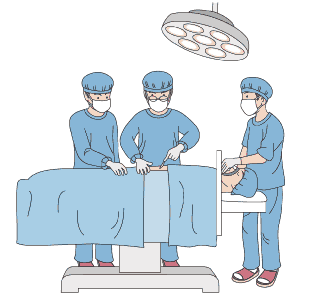
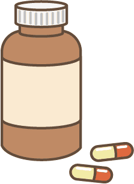

简体中文
简体中文


現在、がん治療では手術・放射線治療・抗がん剤治療が標準治療とされ、一般的にこれらの治療を「三大治療」と呼んでいます。
手術

まず手術は、外科的にがんを切除する治療法です。
特に早期のがんは、手術をすることで根治（治癒を目的とした治療）が可能です。
ある程度進行したがんでも、他の臓器などへの転移が認められない場合には、手術がもっとも有効な手段といえます。
外科的手術は合併症や、術後の体力低下などのデメリットがありましたが、最近では内視鏡手術や、より繊細な手術を実施する為のロボット手術（ダビンチ等）など、技術が飛躍的に向上し、手術によるデメリットが軽減されつつあります。
放射線治療
放射線治療は放射線を照射して、がん細胞が分裂して増えるときに必要な遺伝子に作用し、細胞が増えないようにして、細胞が新しい細胞に置き換わるときに脱落する仕組みを促すことで、がん細胞の増殖を抑える治療法です。
他の臓器などに転移していない場合、放射線で効果的にがん細胞をたたくことができます。
放射線治療に用いられる放射線の種類にはＸ線、γ線、電子線などがあります。
この他、陽子線や重粒子線による治療も行われています。
治療法は大きく分けて体の外から放射線を照射するものと内部から照射するものがあります。
放射線治療のメリットは手術によって切除することなく、臓器をそのまま残して治療できることで、前立腺がんや子宮頚がん、咽頭がんのように、手術で摘出してしまうと生活の質が著しく低下するケースで行われることが多い治療法です。
通院で治療できることから、日常生活を変わらずに続けることができることも大きなメリットです。
しかし、放射線治療にも副作用はあり、疲労感や吐気、下痢などを伴うこともあるので、体調管理に気を付けながら治療を進めます。
抗がん剤治療

抗がん剤治療はがんの増殖を抑えることを目的とした薬剤を用いた治療法です。
化学療法、がん化学療法などと呼ばれることもあります。
手術や放射線治療がどちらも局所治療なのに対して、抗がん剤は全身療法です。
そのため、がんの転移がある場合や転移の可能性のある場合、リンパや血液のがんなどに用いられます。
つまりがん細胞が他に転移してしまうと、局所だけの治療では間に合わないので、薬物によって全身のがん細胞の増殖を抑える必要があるのです。
その他には手術後の転移予防のために用いる場合もあります。
これら三大治療のうち何を選択するかは、患者さんを診ながら、医師が最終的に判断をして決めていきます。
抗がん剤について
抗がん剤は、さまざまな種類の薬が開発されており、医師が患者さんの病状に合ったものを選択していきます。
従来使われている薬は「細胞傷害性抗がん剤」という種類のもので、さらに、代謝拮抗剤、アルキル化剤、抗がん性抗生物質、微小管阻害薬等に分類されます。
また、がん細胞の増殖にかかわる体内のホルモンを調節する治療「内分泌療法（ホルモン療法）」や、がんに特異性の高い標的を探し出し、その標的に効率よく作用する薬「分子標的薬」などの治療も挙げられます。
「細胞傷害性抗がん剤」は正常細胞への攻撃も避けられません。
がん細胞の分裂を阻害して殺す力はあるのですが、同時に正常な細胞にもダメージを与えてしまうという難点があります。
いわば、毒をもって毒を制す治療法で、体の中に毒を入れているようなものです。
そしてこの毒によって痛めつけられる苦しみが、抗がん剤治療の副作用になります。
「分子標的薬」の特徴として、がん細胞だけをとらえて攻撃ができる薬なので副作用が少ないという利点があります。
抗がん剤の副作用について
抗がん剤が引き起こす副作用は実に強烈なものです。
副作用に関しては個人差がありますが、一般的に味覚障害や胃腸障害、体の倦怠感、吐気、下痢、脱毛や四肢のしびれ感が出現してきます。
そのメカニズムとして、抗がん剤の多くは、増殖が盛んな細胞に作用するため、骨髄細胞や毛根など、正常な増殖が盛んな細胞も攻撃してしまいます。
骨髄細胞（幹細胞）は血液中の細胞（白血球、赤血球、血小板）のもととなる細胞のため、これらが攻撃されることにより白血球、赤血球、血小板の減少が起こります。
これらの細胞は、免疫、酸素運搬、血液凝固という体にとって大切な役割を持っているので大きく減少すると命を脅かすことになってしまいます。
そのため抗がん剤を投与するときは、こまめに採血をして急激な減少が起こっていないか注意深く観察していくことが必要となってきます。
それだけではなく、白血球が減少するため、体を守る免疫力が低下してしまいます。
それに伴い、発熱や肺炎などの感染症が起こる危険性もあります。
風邪を引いただけでも重篤な肺炎を発症してしまう患者さんもいます。
また、誰もが訴える吐気は、投与１～２時間後から起きる早期のものと、１～２日後から出てくるものがあるといわれますが、これは投与後すぐからその後も吐気が続いていくということです。
早期の吐気は２４時間以内に治まることが多く、比較的薬で抑えられるといわれます。
しかし、この吐気が治まっても、１～２日後からまた吐気が襲います。
抗がん剤治療はこのつらい吐気と常に戦っていくことになります。
手足のしびれ感も副作用として訴えの多い症状です。
進行すると手足の感覚がなくなり、食事中に箸を落としてしまうほどの症状が出ることがあります。
副作用はほとんどの場合、抗がん剤の投与を始めたとたんに生じるといわれています。